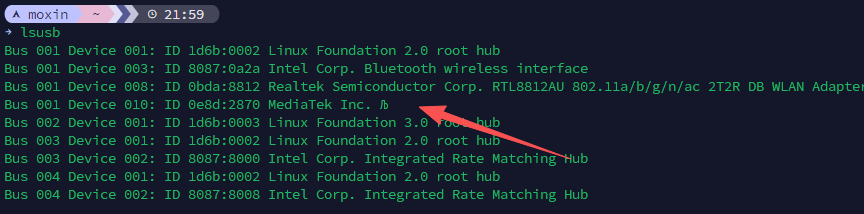
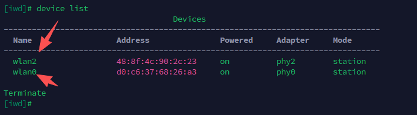
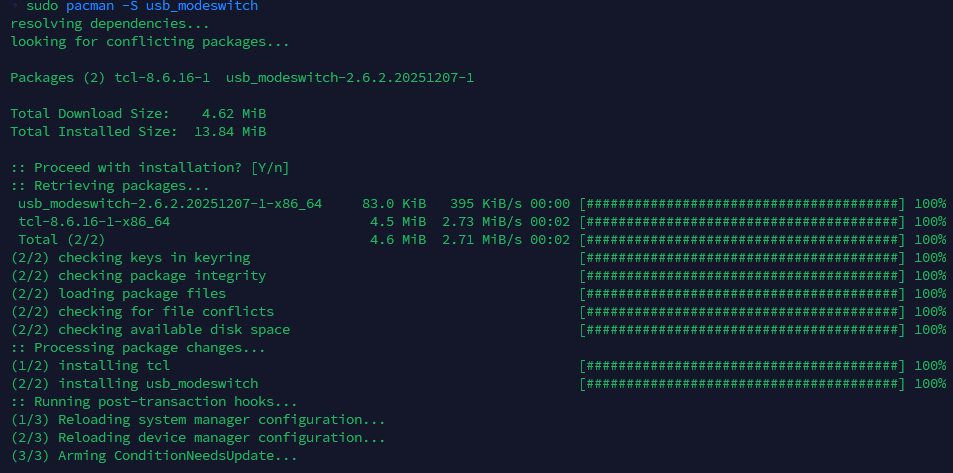
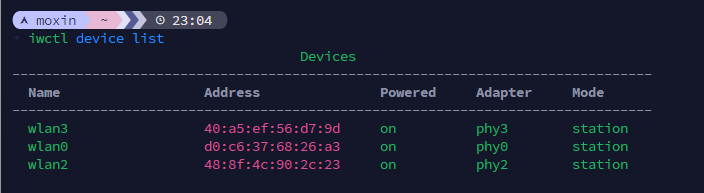
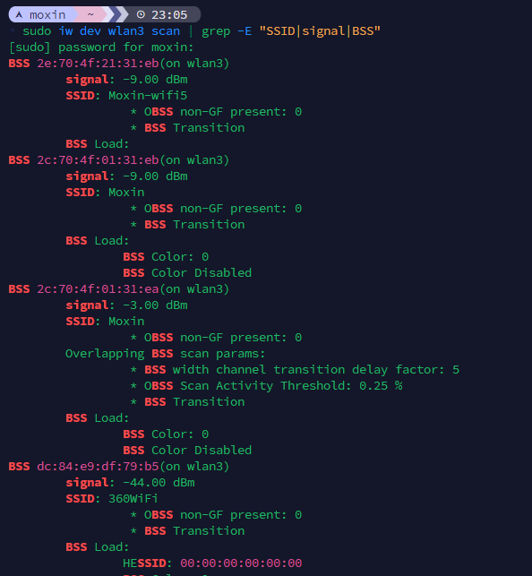

【ArchLinux】如何制服国产免驱网卡
前言
很多国产 USB 无线网卡，比如某些标注“免驱”这类的网卡，通常在 Windows 上能够即插即用或者有适配的驱动，但是在 Linux 下会遇到一些坑。前些日子我给我的一个迷你主机装了一个 ArchLinux，但是机器的网卡不是很好，换了一个但暂时没有适配的信号天线，所以找了一下之前的无线网卡临时用下，发现了一款标注“免驱”的网卡，试了一试。
本文以 COMFAST CF-922AC（MT7612U 芯片） 为例，完整记录从识别设备、切换网卡模式、加载内核驱动、到 iwctl 正常联网的全过程，理论适配所有同方案联发科 / 瑞昱国产免驱 USB 无线网卡。
实验
插上能被 lsusb 识别（也有可能不出具体型号），但 iwctl、系统网络设置里完全看不到无线网卡。

识别设备与模式切换
注意看这个
1 | Bus 001 Device 010: ID 0e8d:2870 MediaTek Inc. Љ |
不是上面的RTL8812AU
你会发现只能得到这是个联发科的设备

查看网卡的时候没这个网卡
（我的wlan0是板载，wlan2是那个RTL8812AU）
此时设备其实处于默认的 Mass Storage 模式（存储模式），主要给Windows展示为一个优盘，让系统安装优盘内的驱动（其实要我说…这纯纯浪费存储芯片，当然这存储芯片也成便宜了），因此 Linux 无法识别为网络设备。
1 | sudo pacman -S usb_modeswitch |
安装USB模式切换工具

1 | sudo mkdir -p /etc/usb_modeswitch.d |
创建配置文件
1 | echo 'TargetVendor=0x0e8d |
MessageContent用十六进制表示的二进制数据，用来让某些 USB 设备从“存储模式”切换到“工作模式”（比如网卡/调制解调器模式）
这串数据是一个 USB Mass Storage Bulk-Only Transport (BOT) 命令块（CBW），很多 3G/4G/USB 网卡都会用这种方式切换模式。
本质就是：
一个伪装成 SCSI “弹出设备”的命令，用来让 USB 设备退出 U 盘模式，切换到功能模式（比如网卡/调制解调器）
分段解析
把它按字节拆开：
1 | 55 53 42 43 |
解释如下：
前4字节：签名
1 | 55 53 42 43 |
ASCII = "USBC"
表示这是一个 USB Command Block Wrapper (CBW)
接下来4字节：Tag
1 | 12 34 56 78 |
一个随便的标识符，用来匹配请求和响应
数据长度
1 | 00 00 00 00 |
表示这个命令 不期望返回数据
标志 + LUN + 命令长度
1 | 00 |
- 方向：0（主机→设备）
- LUN：0
- 命令长度：6 字节
核心命令
1 | 1b 00 00 00 02 00 |
这里是一个 SCSI 命令
1b = SCSI START STOP UNIT 命令
后面的参数：
02关键参数（Load/Eject/Start）
这个组合通常表示：
触发设备模式切换（Eject / 切换模式）
很多 USB 设备（特别是联发科 / 华为 / 中兴设备）：
- 插上时先当 U 盘（内置驱动）
- 需要发送这个命令
- 才会变成真正的设备（比如 LTE 网卡）
注意
如果没成功，可能需要手动执行一下：
1 | sudo usb_modeswitch -v 0x0e8d -p 0x2870 -M '5553424312345678000000000000061b000000020000000000000000000000' |
但是我反正没执行就可以了
1 | sudo modprobe mt76 |
加载驱动
啊。。如果不对，那就是
1 | sudo modprobe mt76x2u |
使用 iwctl 管理 WiFi，重启服务识别新网卡接口：
1 | sudo systemctl restart iwd |


补充
1.切换后仍无网卡
- 检查是否安装
linux-firmware固件包 - 重新插拔网卡，再执行一次 modeswitch 切换
2.重启电脑后网卡又变回 U 盘模式
- 可配置
udev规则，开机自动触发模式切换，无需手动输命令
1 | sudo tee /etc/udev/rules.d/99-mt7612u.rules << 'EOF' |
重新加载 udev 规则：
1 | sudo udevadm control --reload-rules |
3.同时有多张 USB 无线网卡
- 内核会自动生成
wlan0、wlan1多接口，iwctl 可分别管理